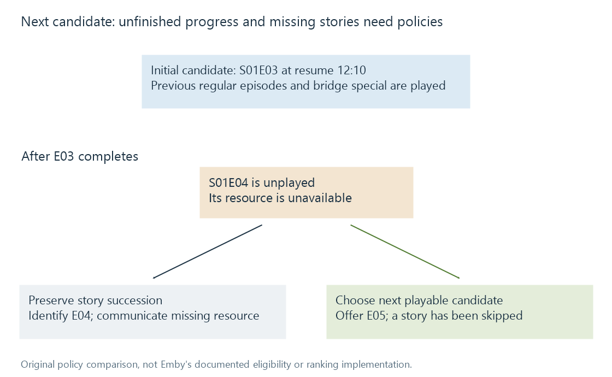

Next-episode selection
Next-episode selection combines an intended episode sequence, user state and resource availability to choose a continuation candidate.
“Next episode” can mean the next story in sequence, the next available unwatched item, or the partly watched episode that the viewer should finish first. These meanings often agree, but the differences explain many apparently odd continuation choices.
A selection needs three kinds of evidence: the intended episode order, this viewer's state, and the available resources. Incrementing a filename's number considers only part of the first.
A worked continuation set
Use this original fictional sequence:
| Sequence position | Item | This user's state | Resource available |
|---|---|---|---|
| 1 | S01E01 | Played | Yes |
| 2 | S01E02 | Played | Yes |
| 3 | S00E01, a bridge special | Played | Yes |
| 4 | S01E03 | Unplayed, resume 12:10 | Yes |
| 5 | S01E04 | Unplayed | No |
| 6 | S01E05 | Unplayed | Yes |
A policy that continues an unfinished episode would select S01E03 at its saved point. That selection occurs before deciding what to do about the missing S01E04.

This diagram is a teaching model, not Emby's Next Up algorithm or a measured app result.
Missing and later are different properties
After S01E03 is marked played, two reasonable policies diverge:
- Preserve story succession: identify S01E04 as next and communicate that its resource is missing.
- Choose the next playable candidate: omit unavailable resources and offer S01E05.
The second policy can make playback convenient while skipping narrative content. The first can retain continuity while offering nothing playable immediately. The decision concerns availability and intended behavior, not whether the episode numbering was parsed correctly.
A filtered catalogue can create a similar effect. An episode absent from one user's accessible candidates is not necessarily absent from storage. The selection's user and library scope therefore matter.
Specials supply placement, not arithmetic
The bridge special in the example belongs after E02 despite its season-zero coordinate. A numeric season/episode sort would place it elsewhere. A defined placement relationship is needed to include it in the intended story sequence.
Television specials explains that distinction. A selection can choose to include relevant specials while excluding supplementary programmes; both decisions require knowing their roles.
Likewise, an alternate episode order can reorder the stories or change their segmentation. “Next number” has meaning only within the arrangement actually represented by the catalogue and files.
Continuation is not general discovery
A newly added episode can be recent without being the next story for this viewer. A recommendation can suggest a different series without continuing the current one. An upcoming catalogue description can have no local playable resource yet.
Emby's Next Up API returns episode candidates in a user context and exposes series and parent filtering. That interface establishes the feature's scope; it does not publish every detail of eligibility and ranking.
See Also
- Understanding episode order
- Television specials
- Watched status
- Resume positions and playback timelines